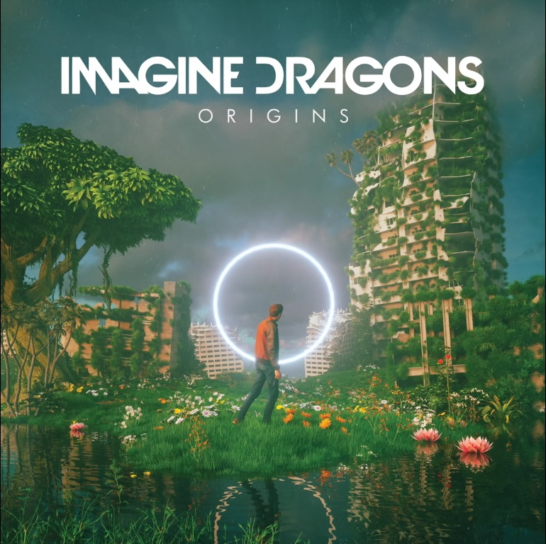

CANCIONERO |
|
Zero I find it hard to say the things I want to say the mostFind a little bit of steady as I get close Find a balance in the middle of the chaos Send me low, send me high, send me never demigod I remember walking in the cold of November Hoping that I make it to the end of December 27 years and the end on my mind But holding to the thought of another time But looking to the ways of the ones before me Looking for the path of the young and lonely I don't wanna hear about what to do I don't wanna do it just to do it for you Hello, hello Let me tell you what it's like to be a zero, zero Let me show you what it's like to always feel, feel Like I'm empty and there's nothing really real, real I'm looking for a way out Hello, hello Let me tell you what it's like to be a zero, zero Let me show you what it's like to never feel, feel Like I'm good enough for anything that's real, real I'm looking for a way out I find it hard to tell you how I wanna run away I understand it always makes you feel a certain way I find a balance in the middle of the chaos Send me up, send me down, send me 'nother demigod I remember walking in the heat of the summer Wide-eyed one with a mind full of wonder 27 years and I've nothing to show Falling from the dove to the dark of the crow Looking to the ways of the ones before me Looking for the path of the young and lonely I don't wanna hear about what to do, no I don’t wanna do it just to do it for you Hello, hello Let me tell you what it's like to be a zero, zero Let me show you what it's like to always feel, feel Like I'm empty and there’s nothing really real, real I'm looking for a way out Hello, hello Let me tell you what it's like to be a zero, zero Let me show you what it's like to never feel, feel Like I'm good enough for anything that's real, real I'm looking for a way out Let me tell you 'bout it Well, let me tell you 'bout it Maybe you're the same as me Let me tell you 'bout it Well, let me tell you 'bout it They say the truth will set you free Hello, hello Let me tell you what it's like to be a zero, zero Let me show you what it's like to always feel, feel Like I'm empty and there's nothing really real, real I'm looking for a way out Hello, hello Let me tell you what it's like to be a zero, zero Let me show you what it's like to never feel, feel Like I'm good enough for anything that's real, real I'm looking for a way out
| |
|
|